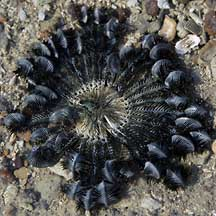
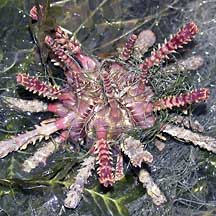
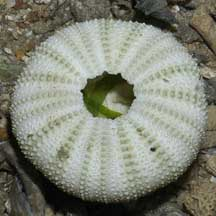
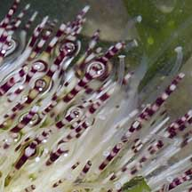
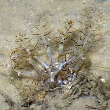

|
|
| echinoderms text index | photo index |
| Phylum Echinodermata |
| Echinoderms Phylum Echinodermata updated Apr 2020
Where seen? Almost everyone is familiar with sea stars. Together with their relatives, these decided 'stars of the shores' are echinoderms. Some kind of echinoderm can usually be found on all our shores. The richest variety of echinoderms appear to be found on our Northern shores such as Changi and Chek jawa. |
 Sea star Chek Jawa, Jun 05 |
 Brittle star Pulau Sekudu, Aug 04 |
 Large group of living sea urchins. Changi, Jul 04 |
| What are echinoderms? They belong
to the Phylum Echinodermata with about 6,500 known species. Most are
bottom dwelling. The Phylum Echinodermata is made up of these groups... Subphylum Crinozoa
Subphylum Asterozoa
Subphylum Echinozoa
|
 Basket star Sisters Island, Jan 12 |
 Feather star Beting Bronok, May 03 |
 Sand dollar Chek Jawa, Sep 03 |
| Give me five! The most
well known echinoderm, the sea star, demonstrates the five-point (pentamerous)
symmetry typical in the group. In contrast, a human has a 2-point
(bilateral) symmetry; you can draw a line from head to toe and have
a mirror image of most of our body parts on the left and right. An
echinoderm, however, can be divided into five similar parts (or multiples
of five) along a circle; much like cutting up a round birthday cake
into five equal slices! Although echinoderms can take on different shapes, they are all generally symmetrical along five axes. Here are some diagrams explaining this in greater detail. Splendid spines: 'Echinodermata' means 'spiny-skin' in Greek. Most echinoderms have a spiny skin. The spines are most obvious in sea urchins. Brittle stars and some sea stars also have prominent spines along their arms. Sand dollars and most sea stars have tiny spines. Sea cucumbers generally lack hard spines. |
 Sea urchin Chek Jawa, Oct 01 |
 Skeleton (test) of a dead sea urchinPulau Sekudu, Jun 06 |
 Heart urchin Kusu Island, Jul 04 |
| Marvellous Morphing: Echinoderms
have an internal skeleton made up of an arrangement of ossicles (plates
made mostly of calcium carbonate), connected by a special kind of
connective tissue called 'catch connective tissue' or 'mutable collagen'
or 'mutable connective tissue'. This tissue is made of collagen and
echinoderms can rapidly control the consistency of this tissue from
rock hard to almost liquid within seconds. By changing the consistency
of this tissue, echinoderms can move, feed, defend themselves and
reproduce asexually. This property allows the sea urchin to move and
lock its spines; a brittle star and sea star to bend or even purposely
break off an arm by softening the tissues; a sea cucumber to flow
into narrow places then harden so predators cannot pry it out. Awesome ossicles: All echinoderms have ossicles, but these have different shapes and are arranged differently. Sea cucumbers have microscopic ossicles and most of their bodies are made up of connective tissue. This is why they appear softer than their cousins. The ossicles in sea stars and and especially brittle stars are larger. In brittle stars these articulate with to form flexible arms. In sea urchins and sand dollars, the ossicles are large and fused to one another, forming a rigid skeleton which is the spherical test in sea urchins, and flattened into a thin disk in sand dollars. Echinoderms have internal skeletons and not externals ones like arthropods. Although some, like sea urchins, appear to have an external skeleton, the skeleton of a living echinoderm is actually covered by a thin tissue. |
 Sea cucumber Changi, Dec 03 |
 Ossicles of the Remarkable sea cucumber Photos shared Robin Ngiam Wen Jiang, see also his blog. |
 Common sea star regenerating
new arms. Common sea star regenerating
new arms. Tanah Merah, Oct 09 |
| Water of life: Another unique
feature of echinoderms is their water vascular system, a network of
internal canals supported mainly with seawater. By expanding or contracting
chambers in the system, the water pressure in the canals can be directed
and changed. Sea stars pump up and move their tube feet to move, brittle
stars pump up and move their entire flexible arms. This water vascular
system is connected to the outside through the madreporite, a porous
plate usually on the upper side of the body. Sea urchins and sand dollar move using their spines, rather than by using their hydraulic system. Sea cucumbers move their entire body in a more worm-like manner, using muscles. |
 Long pointed tube feet of the Sand sea star. Chek Jawa, Apr 05 |
 Long tube feet of the White sea urchin Changi, May 05 |
 Close up of tubefeet on arms of a brittle star. Pulau Sekudu, Jun 06 |
| Handy Feet: Most echinoderms have
tube feet. These are extensions of, and are connected to, the water
vascular system which pumps them up. Tube feet have muscles to retract
them, but no muscles to extend them. These tube feet have many uses. In sea stars and sea urchins, tube feet are used to move, gather food and breathe. Sea stars appear to have special glands in their tube feet that secrete a glue so the feet stick to things, and another substance to release the tube feet. Some sea urchins 'carry' bits of debris using their tube feet. In brittle stars, tube feet are tiny and used mainly to gather food and breathe. Brittle stars use their highly flexible arms to move, and not their tube feet. In sea cucumbers, tube feet around the mouth are modified into feeding tentacles to gather food. In sand dollars, the minute tube feet on the underside are used to gather food, while tube feet emerging from the upperside are used to breathe with. Tube feet in general may also be used to excrete wastes, and to sense chemicals with. An echinoderm can have as many as 2,000 tube feet! Heartless and brainless! An echinoderm doesn't have a heart. The internal fluids do not have a one-directional flow and simply ebb and flow within the animal. It has a simple nervous system but no brain. It does, however, have a complete digestive system with a mouth and an anus. |
 A Blue lined brittle star possibly releasing eggs Pulau Sekudu, Jul 04 |
 A Knobbly sea star about to spawn? Cyrene Reef, Aug 11 |
 Grey bonnet snailon top of a Cake sand dollar. Cyrene Reef, Aug 11 |
| What do they eat? Most echinoderms
gather tiny edible bits from the water or the ground surface. Some sea stars,
however, hunt and eat other animals. What eats them? Some fishes may eat sea urchins and many animals snack on brittle stars. Large snails may eat sand dollars. But most other adult echinoderms don't seem to be considered tasty by many animals. Echinoderm babies: Most echinoderms practice external fertilisation, releasing their eggs and sperm simultaneously into the water. Most undergo metamorphosis and their larvae look nothing like their adults. The form that first hatches from the eggs are bilaterally symmetrical and free-swimming, drifting with the plankton. They eventually settle down and develop into miniatures of their parents. Some echinoderms, like sea cucumbers, can reproduce asexually by purposely dividing themselves or budding off a part of their body. |
 Ball sea cucumbers usually lie buried with only their feeding tentacles above ground. Changi, Jul 04 |

| Living on a star: Many different
kinds of animals may live with echinoderms. A kind of worm-like animal
is often seen nestled around the mouth of the Black
sea urchin. Tiny snails may live on sea stars. Some shrimps and
small fishes have adaptations to live with feather stars, sea urchins
and sea cucumbers. Echinoderms in turn may also live with other animals. Tiny brittlestars are often
found on and even inside sponges. Human uses: Echinoderms are eaten and some are major trade items (e.g., sea cucumbers, sea urchins). Other echinoderms are harvested for the live aquarium trade (some sea cucumbers). Yet others are killed simply to make cheap ornaments (sea stars, sand dollars). Status and threats: Many of our echinoderms are listed among the threatened animals of Singapore. They are threatened mainly by habitat loss due to reclamation or human activities along the coast that affect the water quality. Trampling by careless visitors and over-collection can also have an impact on local populations. |
| Echinoderms
on Singapore shores text index and photo index of echinoderms on this site |
| Threatened
echinoderms of Singapore from Davison, G.W. H. and P. K. L. Ng and Ho Hua Chew, 2008. The Singapore Red Data Book: Threatened plants and animals of Singapore. *from Lane, David J.W. and Didier Vandenspiegel. 2003. A Guide to Sea Stars and Other Echinderms of Singapore. Asteroidea sea stars
Echinoidea sand dollars
sea urchins
Holothuroidea sea cucumbers
Crinoidea feather stars
Ophiuroidea brittle stars
|
Links
|